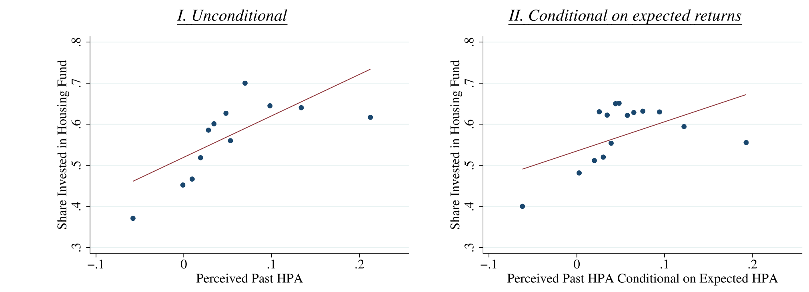
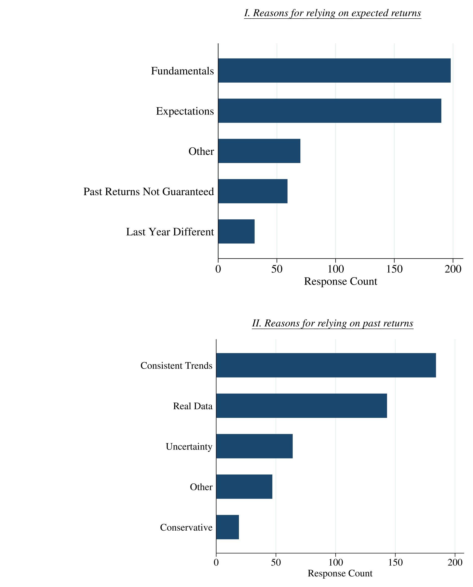
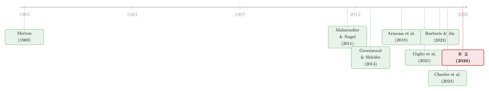

嘴上说的预期，藏不住手上的外推：投资里那道「隐性」的暗门
本文读的是 Liu & Palmer (2026, Journal of Financial Economics)：在一个「分 1000 美元」的住房投资实验里，作者发现——即便已经控制住了你亲口报出的预期收益、感知风险和风险厌恶，「你记忆中过去的房价涨幅」仍然能独立地预测你会把多少钱投进房子。也就是说，人们在下单那一刻外推的程度，比他们在回答预期问卷那一刻所暴露出来的，还要更多。作者把后者叫显性外推，把这块多出来的、藏在问卷之外的，叫隐性外推 (implicit extrapolation)——它整整大了一倍。
1 一个让人尴尬的「充分统计量」
做行为金融、做预期研究的人，这些年大概都被同一个悖论硌过牙。
一方面，我们有铺天盖地的证据说：人是外推的 (extrapolative)。股票涨过一阵，人们就觉得它还会涨；房价涨过一阵，人们就预期它继续涨。Greenwood and Shleifer (2014) 把这件事钉死在了调查数据上——把人们报出的预期收益，对过去的收益做回归，斜率漂亮地为正。于是「最近经历过的好收益，会抬高你嘴上报出的预期收益」几乎成了常识。
可另一方面，又有一批同样扎实的研究，把个人层面的预期问卷和真实的交易记录拼在一起，结果发现：你嘴上的预期，几乎预测不动你手上的交易。Giglio et al. (2021a) 的「关于信念与组合的五个事实」里就写得很清楚，信念的变化既预测不了你何时交易，也只能解释一小部分你交易多少；Ameriks et al. (2020)、Charles et al. (2024) 也都指向同一个方向——stated beliefs（嘴上的信念）对行动的解释力，弱得不像话。
于是张力就出来了。如果人真的那么爱外推，外推又主要走「信念」这条道，那为什么信念几乎牵不动行动？
要看清这道裂缝到底卡在哪，得先把教科书的逻辑摆出来。在经典的 Merton (1969) 组合选择模型里，只有一种风险资产、未来收益服从正态分布，那么投资者配置在风险资产上的最优份额 \(\phi_t\) 就是一个极其干净的式子：
这个式子里藏着一句行为金融做实证时几乎当作公理的话：预期收益 \(E_t[r_{t+1}]\) 是一个「充分统计量 (sufficient statistic)」。
什么意思？在一个有动量、像房市这样的市场里，过去一期的收益 \(r_t\) 当然会被你用来预测未来——它会通过 \(E_t[r_{t+1}]\) 进来。但请注意：一旦我把你的 \(E_t[r_{t+1}]\)、你的 \(\sigma_t^2\)、你的 \(\alpha\) 都固定住，\(r_t\) 就不应该再独立地出现在这个配置规则里了。过去收益对投资的全部影响，都该被「你报出的预期」这一个数吸收干净。
所以教科书的剧本是这样的：过去收益 → 抬高你嘴上的预期 → 抬高你的配置。一条线走到底，预期是唯一的中转站。
作者特意强调，他们并不真的相信投资人就是按 Merton 公式下单的。这个公式只是用来「fix ideas」——把「预期是充分统计量」这个命题摆清楚，好让接下来的检验有一个干净的靶子。真正要确立的，是一个更弱、更稳的结论：人在投资阶段外推的程度，超过了他在信念阶段所暴露的。
2 识别策略：一个「无摩擦」的 1000 美元实验
接着，一个自然的问题是：怎么检验「\(r_t\) 在控制住 \(E_t[r_{t+1}]\) 之后还独立起作用」？
难点在于，真实世界里过去房价涨跌可以通过一万种渠道影响你买不买房——它会改变你的信贷约束（房子涨了，你净值高了，更容易拿到按揭）、会改变你的财富因而改变风险厌恶、会牵动交易成本和对自住房的偏好。这些渠道全都不是 Merton 公式里的东西，一旦混进来，你就分不清 \(r_t\) 的系数到底是「信念」还是「这些乱七八糟的需求因素」。
作者的解法，是借用 Armona et al. (2018) 设计、跑在纽约联储 消费者预期调查 (Survey of Consumer Expectations, SCE) 里的一个投资实验。它的妙处恰恰在于「假」：
请你把 1000 美元，在一个年息 2% 的无风险储蓄账户和一个追踪你所在 zip code 本地房价涨幅的「住房基金」之间做分配。
这是一个纯假设性的配置题。它没有首付、没有按揭资格、没有交易成本、没有「我想住进去」的自住偏好。换句话说，作者用这个设计，把上面那一堆现实摩擦一刀切掉了。在这个干净的环境里，按理论，过去的本地房价涨幅 \(r_t\) 想影响你投进住房基金的份额 \(\phi\)，就只剩两条合法通道：要么改变你的预期收益，要么改变你的风险厌恶。把这两条都堵死，\(r_t\) 若还在动，那就只能是 Merton 公式之外的东西在作祟。
于是作者在回归里做了一整套「堵漏」：
- 控制住每个人亲口报出的预期房价涨幅（一年期、五年期都问）；
- 不只控制点预期，还灵活地控制整个预期收益分布——SCE 会问「跌 5% 以上的概率」「跌 0–5% 的概率」「涨 0–10% 的概率」「涨 10% 以上的概率」，这就把 \(\sigma_t^2\) 乃至更高阶矩都摁住了；
- 控制住自报的风险承受意愿，以及一大堆人口学特征；
- 因为问卷有三种随机抽中的提问框架（framing），还加了框架指示变量。
把这些都放进去之后，核心解释变量是感知到的过去房价涨幅 (perceived past home-price growth)。注意是「感知」而非房价指数里那个客观数——作者发现，恰恰是人脑子里记住的那个涨幅，比客观指数更能预测投资行为。
这里有个容易被忽略的细节：作者用的是主观记忆中的过去收益。这并不是偷懒。它本身就是机制的一部分——隐性外推，外推的正是你记得的那段历史，而不是统计局算出来的那段。
3 主要结果：多出来的那一倍
然后，结果来了，而且很硬。
在这个本该让预期当「充分统计量」的设定里，感知到的过去涨幅 \(r_t\)，在控制住预期收益、预期分布、风险厌恶之后，仍然正向地预测住房份额 \(\phi\)。过去涨得越多（在你记忆里），你越敢往住房基金里多投——哪怕你嘴上报出的预期收益已经被固定。

Figure 2: Risky asset shares and perceived past returns
更关键的是量级。作者把两种算法对比：第一种假设「嘴上的预期已经吃掉了全部外推」（即标准做法，\(r_t\) 只能走信念通道）；第二种允许 \(r_t\) 在投资阶段额外起作用（即允许隐性外推）。结果是——允许隐性外推时，过去收益对投资的效应，是只走信念通道时的整整两倍。
这句话值得停下来咂摸。它意味着：如果你像绝大多数文献那样，只看「过去收益 → 嘴上预期」这一段来估计人有多爱外推，你会系统性地低估一半。真正驱动行动的外推，有一半藏在问卷照不到的地方。作者给这块起名叫 隐性外推，与之相对的、已经在预期里显形的那部分叫 显性外推 (explicit extrapolation)。
这个结论，作者很克制地补了一句：它不是在否定预期调查的价值，也不是在推翻「信念渠道」。恰恰相反——它是说，信念渠道可能比我们以为的还要强：如果我们能测到那个真正用于决策的「潜在信念 (latent beliefs)」，而不是问卷里那个「陈述信念 (stated beliefs)」，外推的盘子会更大。换句话说，问卷低估的不是「信念重不重要」，而是「信念里到底装了多少外推」。
这一下，第 1 节那道悖论就开始松动了。强劲的经验效应（experience effect，Malmendier and Nagel, 2011：经历过低股市回报的一代人，预期低、持股也低）与微弱的「陈述信念→行动」链条，之所以看起来打架，是因为大家都默认外推只走嘴上这条道。一旦承认人在下单时还会额外外推，两边就接上了。
一个很有意思的稳健性安排：作者反过来质疑「会不会只是测量误差？」——隐性外推确实可以被框成一种测量误差（观测到的信念，不等于决策真正用的那个信念）。但他们论证，结果不是由「陈述预期比记忆收益更吵」这种相对噪声差异驱动的（细节在附录 E）。他们还做了一组关键的安慰剂式检验：把「感知过去涨幅」与一堆衡量「住房财富在家庭组合中有多重」的变量（房产市值/净资产、房屋净值、收入）做交互——如果 \(r_t\) 是通过「房价涨了我更有钱、于是更不怕风险」这条风险厌恶通道起作用，这些交互项就该显著。结果是：没有一个交互项能预测投资。这把「风险厌恶通道」基本排除了，剩下的，主要就是经由隐性外推的预期通道。
4 真正关键的一步：为什么人宁可信「记忆」也不信「自己的预测」？
到这里，最妙、也最反直觉的问题才浮出来：一个人为什么会在做投资决策时，绕开自己刚刚亲口报出的预期，转头去依赖记忆中那段过去的涨幅？ 那个预期，可是他自己给的啊。
作者的答案是一个字：信心 (confidence)。
但真正关键的一步在于，他们没有停留在「猜」，而是直接去问、去测。在 2020–2021 两轮调查里，他们同时收集了受访者对两样东西的信心水平：一是对自己记忆中的过去收益有多大把握，二是对自己预测的未来收益有多大把握。然后看：那些「对过去收益比对自己预测更有信心」的人，是不是在投资时更重地压在过去收益上？
答案是肯定的——这类人的投资决策，确实更多地加载在过去收益上。信心的高低，决定了你在下单时把哪个信号当主心骨。
于是反转出现了。问题不再是「人是不是爱外推」，而是「在多个信号里，你最信哪一个」。如果你对「房价过去涨了 8%」这件事记得清清楚楚、深信不疑，却对「我猜明年涨 3%」这个预测心里直打鼓，那么在真要掏钱的一刻，你自然会更靠向那个让你更踏实的信号——哪怕从模型角度看，该用的本该是预期。
为了把这件事钉死，作者还做了第二件事：在 2020–2021 的子样本里，直接问受访者「你做投资决策时，是更看过去收益，还是更看预期收益？」——结果有 44% 的人回答「更看过去收益」。对这批人，作者在 2021 年追加了一道开放式问答，让他们用自己的话解释「为什么」。把这些自由文本编码归类后，结论很说明问题：多数人给出的理由，要么是「我就是有意在顺着趋势外推」，要么是「我对自己预测的那个数没什么信心」——这正好对应「显性外推之上，还叠了一层隐性外推」。

Figure 3: Coded responses to investment decision factor rationale
最后，作者还给了第三块拼图：从「预测」到「投资」这一跳里，其他因素的权重普遍下降了。这与「投资者对自己陈述信念的不同维度，信心是不一样的」高度吻合——你对某些维度的信念半信半疑，到了真金白银的关口，就把它们悄悄丢掉了。
5 三种机制：同一现象的三副面孔
把「信心驱动的隐性外推」这件事再往里挖，作者提出了三种可以并存的机制。它们不是互斥的竞争假说，更像是从三个角度看同一头大象。
其一，强化学习 (reinforcement learning)，沿用 Barberis and Jin (2023)。 这个框架把学习拆成两段：回答预期问卷时，投资者用全部历史数据做贝叶斯更新，形成信念，这叫「基于模型的学习 (model-based learning)」；可到了真正配置资产时，他们还会额外回想——我过去哪几次配置是成功的？那就再来一次类似的。这第二段不显式地形成信念，而是直接拿过去的投资结果来指导当下，叫「无模型的学习 (model-free learning)」，背后有神经科学证据撑腰（McClure et al., 2003 等）。这恰恰解释了为什么投资阶段会多出一层对经验的依赖。作者还顺手做了个漂亮的延伸检验：人们会把租金预期和通胀预期揉进自己的房价预期里（model-based，前瞻性的信号该用上），却不会在投资决策里对这两个信号做出反应——因为 model-free 学习是回望的、靠经验的，前瞻性的租金/通胀预期天然会被它漏掉。一个机制，两种信号，两种命运，对得严丝合缝。
其二，模糊厌恶 (ambiguity aversion)，源自 Epstein and Schneider (2008)。 面对质量不明的「模糊」信号时，模糊厌恶的投资者会对利好反应不足、对利空反应过度。而「陈述一个信念」这件事本身不带风险，所以这种非线性的反应函数只在投资阶段出现、在预测阶段缺席。作者的证据是：当租金、通胀这些基本面信号高于中位数（即利好）时，投资者似乎不把它们纳入投资决策——与「模糊厌恶者对利好反应不足」一致，从而在「嘴上的预期」和「真正决定投资的因素」之间撑开一道缝。
其三，刻意挑那个更保守的信号。 作者发现：那些「感知过去收益低于预期收益」的人，主要依赖过去收益；而「预期收益低于感知过去收益」的人，则更依赖预期收益。翻译过来就是——面对有风险的投资，人倾向于在两个信号里挑更保守（更低）的那个。这也可能反映一种谨慎：当两个数差得太远时，投资者会给「也许我这个数报错了」留一份权重。正是这种「挑低的信」，让整个样本在控制预期之后，仍然显出对过去收益的额外依赖。
6 文献脉络
把这篇论文放回它生长的那条藤上，会看得更清楚。
最早的根，是 Merton (1969) 的组合选择——它给了我们那个「预期是充分统计量」的干净基准，也成了后来一切「越界」证据的靶子。沿着「人会外推」这一支，房市里有 Piazzesi and Schneider (2009) 的动量交易者、Glaeser and Nathanson (2017) 的外推型房价模型；而把外推从「行为」拉到「可测的信念」上的，是 Greenwood and Shleifer (2014)——用调查数据把外推钉实。

另一支，是「经验效应」。Malmendier and Nagel (2011) 证明了亲身经历过的回报会长久地塑造一个人的预期与持仓，这一支后来枝繁叶茂。可偏偏与此同时，Giglio et al. (2021a)、Ameriks et al. (2020)、Charles et al. (2024) 这批把预期与交易记录对拼的研究，发现「陈述信念→行动」弱得反常——经验效应这么强，信念渠道却这么虚，悖论由此而生。
这篇论文的位置，正卡在这道裂缝上。它借 Armona et al. (2018) 的投资实验做手术刀，把现实摩擦切干净，证明外推在投资阶段还有额外的一层；又用 Barberis and Jin (2023) 的强化学习框架给出微观机制。它可以被看作把 Barberis-Jin 从股市搬到房市、并把信号集从「过去收益」扩展到「租金、通胀」的一次实证延伸。（关于「人到底有多爱外推、又有多少是逆向」，可参见《外推者与逆向者：一把在实验室里量出来的尺子，丈量真实世界的买卖》；关于把「风险厌恶」从其他因素里干净地剥出来，可参见《94% 的人其实都想买股票——把「风险厌恶」和「麻烦」分开来量》。）
7 评论与延伸（Q&A + 研究方向）
(a) 几个可能的疑问
Q：「隐性外推」和普通的「外推」到底差在哪？不就是换了个名字？
差在「在哪一阶段发生」。普通外推（这里叫显性外推）指的是过去收益抬高了你嘴上报出的预期，它在信念阶段就显形了，回归里看「过去收益→预期」的斜率就能抓到。隐性外推是指：在你已经报出预期之后，过去收益还独立地影响你的投资——它发生在投资决策阶段，问卷照不到。本文的全部新意，就是证明后者存在，且量级是前者多出来的一倍。
Q：用「假」的 1000 美元实验，结论能外推到真实买房吗？
这是最该担心的点，作者也知道。他们的回应是：把 2015–2021 的住房调查合起来，用「买非自住投资性房产的意愿/概率」这个真实世界结果做检验，发现感知过去涨幅在控制预期之后仍然正向预测——核心结论在真实行为上也站得住。假设性实验负责干净识别，真实结果负责外部有效性，两条腿走路。
Q：会不会只是测量误差——陈述预期太吵，所以过去收益捡了漏？
作者专门处理了这件事（附录 E）。隐性外推确实可以被框成「观测信念 ≠ 决策信念」的测量误差，但他们用工具变量处理预期里的调查噪声，并论证结果不是由「陈述预期相对记忆收益更吵」这种相对噪声驱动的。即便把它当测量误差看，重点也变成了：这块「误差」不是纯噪声，而是能被过去经验这种可观测因素系统性解释的——那它就不只是误差，而是真实的决策输入。
Q：那「房价涨了人更有钱、所以更敢冒险」这条财富/风险厌恶通道呢？
被一组交互检验基本排除了。作者把感知过去涨幅与「住房财富在组合中有多重」的多个度量（房产市值/净资产、房屋净值、收入）交互，如果走的是风险厌恶通道，这些项该显著——结果一个都不显著。再加上实验本身已经切掉了信贷约束、交易成本等摩擦，剩下的主渠道就是经由隐性外推的预期通道。
Q：44% 的人说「更看过去收益」，会不会只是嘴上这么说、并不影响行动？
不是嘴上说说。作者把「自报更看过去收益」与实际投资回归交叉验证：这批人的投资决策确实更重地加载在过去收益上；而且对「更信过去」的人，他们的信心数据显示，正是「对过去收益比对自己预测更有信心」。自报、行为、信心三者互相印证，不是孤立的一句问卷回答。
Q：这是不是在说「预期调查没用」？
恰恰相反。作者反复强调结论不否定预期调查、也不推翻信念渠道。它说的是：信念渠道可能比现有估计更强——只要我们能测到真正用于决策的潜在信念，而非问卷里的陈述信念。预期调查依然有用，只是它系统性地漏掉了发生在下单那一刻的那半截外推。
(b) 几个可能的研究问题与提案
1. 把「隐性外推」搬到公司债/信用市场。
【经济故事】债券投资者同样会外推——经历过的违约率、信用利差走势会塑造他们对未来的预期。一个自然的问题是：在信用配置上，是否也存在「下单时比问卷里更爱外推」的隐性外推？尤其是机构投资者，他们既报预期（如调查、卖方一致预期），又留下持仓变动记录。
【可行性】中。需要把信用市场的预期调查（如部分央行/行业的信用条件预期调查）与机构持仓（如 eMAXX、保险公司 NAIC 申报）对拼。识别上可借鉴本文「控制预期后看过去收益是否独立起作用」的思路，但信用市场缺一个像 SCE 那样干净的假设性实验，外生性会更弱——这是主要障碍。
2. 外资持有人的「记忆」用的是哪段历史？
【经济故事】本文强调外推外推的是主观记忆中的历史。那么跨境投资者很有意思：一个投资美国信用债的外国机构，它外推的是美国本地的历史收益，还是自己母国市场的经历？如果「经历」是按地理/母国塑造的，那同一批美国债券在不同来源国投资者眼里就会被赋予不同的「记忆基准」。
【可行性】中偏低。需要按投资者国籍切分的持仓面板（如 TIC、部分托管行数据），并构造各来源国的「经历收益」。识别可用母国市场冲击作为经历的外生变动。难点在于很难同时拿到这些跨境投资者的陈述预期，因而难以干净地分离显性/隐性外推——更现实的版本是退一步，只检验「经历效应是否随母国而异」。
3. 信心是可以被「干预」的吗？
【经济故事】既然是「对哪个信号更有信心」决定了人靠哪个信号下单，那一个自然的政策/产品问题是：如果通过信息呈现（比如明确告知预测的历史准确率、或给出过去收益的不确定区间）去调节投资者对两类信号的信心，能否改变他们的隐性外推程度？这对投资者教育和理财产品的「默认设置」都有含义。
【可行性】高。这本质上是一个调查实验，可以在 SCE 这类平台或独立的在线实验里，随机给受访者不同的信心提示，再观察 1000 美元配置的变化。本文已经把测量工具（双重信心问题 + 投资实验）现成地铺好了，加一个随机干预臂即可。
4. 隐性外推与流动性：谁在「记忆」驱动下追涨杀跌？
【经济故事】如果一部分投资者在下单时额外地顺着记忆中的涨幅外推，那么在市场层面，这种隐性外推可能放大顺周期的买卖压力，进而影响流动性——上涨时一致涌入、下跌时（叠加模糊厌恶对利空的过度反应）一致撤离。
【可行性】中。需要把投资者层面的外推倾向（可用本文式的调查度量）映射到其交易行为与对应资产的流动性指标上。识别上偏相关性，较难做到因果；但「高隐性外推投资者占比高的资产，是否在大跌时流动性恶化更甚」是一个可检验、且对信用市场尤其有意思的描述性问题。
8 参考文献与我的判断
先说我的评价。这篇论文最漂亮的地方，是它把一个看似抽象的命题——「外推到底发生在信念阶段还是决策阶段」——做成了一个可以被干净识别、且能被直接询问的实证问题。那个假设性的 1000 美元实验是点睛之笔：它用「假」换来了「净」，把信贷、财富、交易成本这些天然纠缠的需求因素一刀切开，让「控制预期后过去收益是否独立起作用」这个检验变得可信。而「直接收集对两类信号的信心、再用开放式问答让受访者自报理由」这一招，把机制从「计量推断」推进到了「当事人自述」，说服力上了一个台阶。「隐性外推让经验效应的真实量级翻倍」这个结论，也漂亮地把经验效应与弱信念渠道这对老悖论缝合了起来。
要我挑刺，主要有两点。其一，核心证据高度依赖单一调查平台（SCE 房市模块）和单一资产类别（本地住房）。住房有强动量、强本地经验，是外推最容易现形的土壤；这套结论能否移植到流动性更高、经验更分散的股票或信用市场，仍待验证。其二，信心是「测量」出来的，不是「外生变动」出来的——「对过去更有信心的人更靠过去」可能本身就内生于某种第三类型差异（比如金融素养、认知能力）。作者用人口学和金融素养做了缓解，但这终究是横截面相关，离「随机改变信心→改变外推」的因果还有一步。这也正是我最想看到的后续：一个随机干预信心的实验，看隐性外推能不能被「调」出来、又「调」回去。
一句话带走：别再把投资者嘴上报出的预期，当成他真正用来下单的那个信念的充分统计量了。中间隔着一道叫「信心」的暗门，门后还藏着整整一倍的外推。
参考文献
Armona, L., Fuster, A., Zafar, B. (2018). Home price expectations and behaviour: Evidence from a randomized information experiment. Review of Economic Studies.
Barberis, N., Jin, L. J. (2023). Model-free and model-based learning as joint drivers of investor behavior. Working Paper / NBER.
Charles, C., Frydman, C., Kilic, M. (2024). Insensitive investors. Journal of Finance.
Epstein, L. G., Schneider, M. (2008). Ambiguity, information quality, and asset pricing. Journal of Finance 63(1), 197–228.
Giglio, S., Maggiori, M., Stroebel, J., Utkus, S. (2021a). Five facts about beliefs and portfolios. American Economic Review 111(5), 1481–1522.
Glaeser, E. L., Nathanson, C. G. (2017). An extrapolative model of house price dynamics. Journal of Financial Economics 126(1), 147–170.
Greenwood, R., Shleifer, A. (2014). Expectations of returns and expected returns. Review of Financial Studies 27(3), 714–746.
Liu, H., Palmer, C. (2026). Implicit extrapolation and the beliefs channel of investment demand. Journal of Financial Economics 175, 104172.
Malmendier, U., Nagel, S. (2011). Depression babies: Do macroeconomic experiences affect risk taking? Quarterly Journal of Economics 126(1), 373–416.
Merton, R. C. (1969). Lifetime portfolio selection under uncertainty: The continuous-time case. Review of Economics and Statistics 51(3), 247–257.
Piazzesi, M., Schneider, M. (2009). Momentum traders in the housing market: Survey evidence and a search model. American Economic Review 99(2), 406–411.